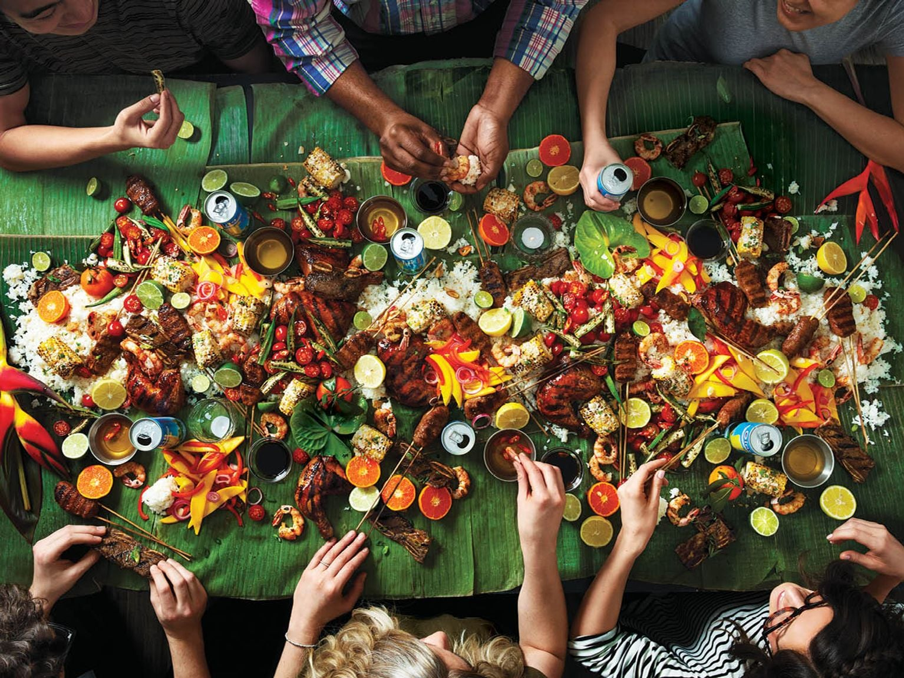

Mabuhay! Welcome to the Philippines, the land of beaches, islands, and amazing food!
Here, you can explore and learn all about some of the most well known Filipino dishes that have brought families and communities together for generations.
Well, what are you waiting for, let's eat! As we say in the Philippines, "Kain na"!
*Note: This is not a complete list of traditional foods. Feel free to learn more about Filipino cuisine from other resources.*